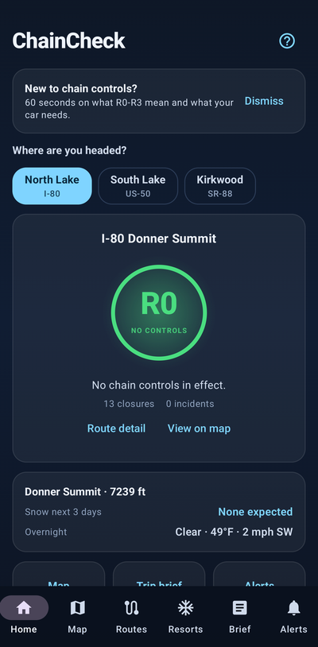
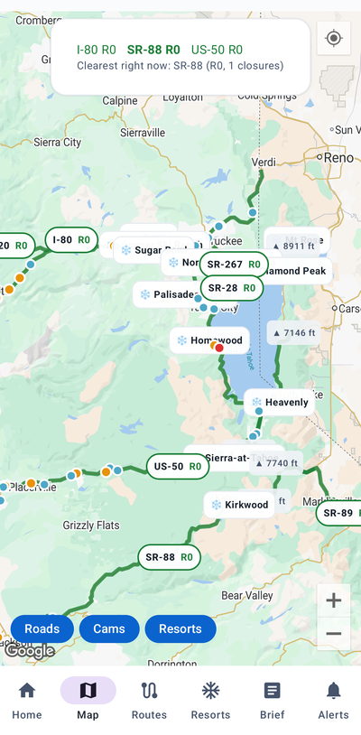

Sierra passes to Lake Tahoe
ChainCheck
Live chain controls, road closures, pass weather, and resort snow for the Sierra passes to Lake Tahoe.
Free, no account, open source. App Store and Google Play listings are planned.
- R0
- R1
- R2
- R3
- Closed


What it shows
Everything you check before a Tahoe drive, in one app.
- Route statusEach route's current chain control level, R0 to R3 or Closed, and what it requires for your vehicle.
- MapEvery Sierra crossing on its real highway geometry, colored by control level, with Caltrans cameras, closures, and incidents.
- Push alertsWatch a route and get a notification when its tier changes, a closure goes up, or a storm warning lands on its pass.
- Pass forecastsNational Weather Service forecasts and hourly snow, split into before departure and during the drive.
- Resort snow24 hour totals, base depth, and lifts open for 11 Tahoe resorts.
- AI trip briefA short summary that can only restate verified facts; anything that fails validation ships as plain text instead.
Verify before you drive. ChainCheck is not affiliated
with Caltrans, the CHP, the NWS, or any resort. Conditions change faster
than any app. Dial 511 or check
quickmap.dot.ca.gov. Whether it
is safe to drive is always your decision.
Where the data comes from
Data sources
Chain controls, closures, and cameras come from public Caltrans district feeds; incidents from the CHP dispatch feed; forecasts from the National Weather Service and Open-Meteo; route geometry from OpenStreetMap contributors; resort conditions from each resort's public snow report.